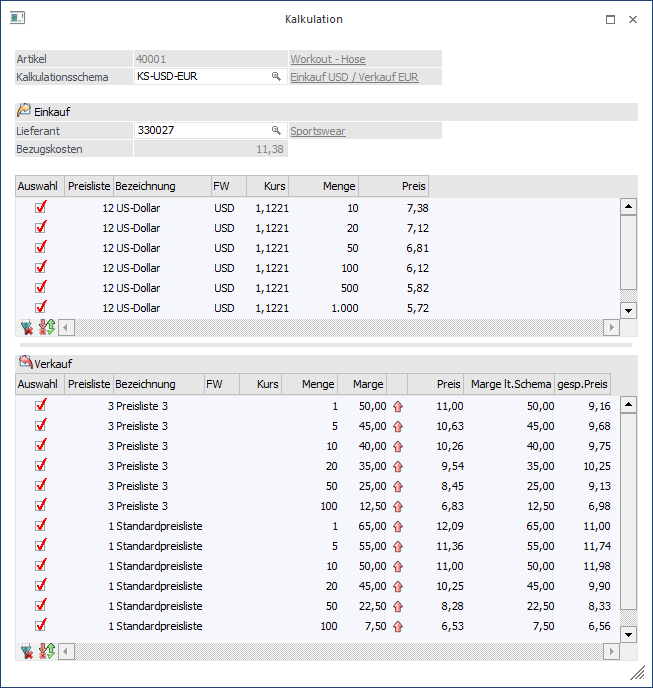
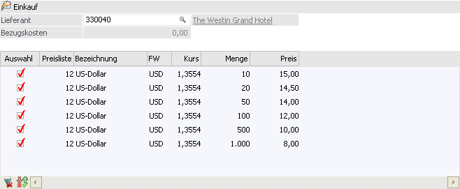
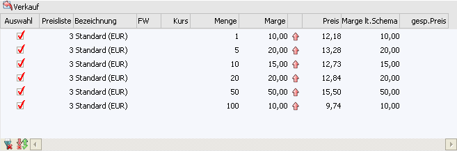
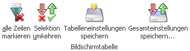
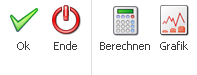

Mit dem Button "Kalkulation", welcher im Artikelstamm (WinLine FAKT - Stammdaten - Artikel - Register "Preise") zu finden ist, wird das Kalkulationsfenster geöffnet.
In diesem kann auf Basis eines Kalkulationsschemas der Verkaufspreis eines Artikels berechnet werden.

Ø Kalkulationsschema
In diesem Feld wird das Kalkulationsschema eingetragen, welches für die Berechnung verwendet werden soll. Ist bei der Artikeluntergruppe bereits ein Schema hinterlegt, so wird dieses automatisch vorgeschlagen.
Einkauf

Ø Lieferant
Wenn an dieser Stelle ein Lieferant hinterlegt wird, dann können im späteren Verlauf auch die Einkaufspreise lieferantenspezifisch angelegt werden.
Hinweis
Wenn im Kalkulationsschema bereits ein Lieferant zugewiesen wurde, dann wird dieser in diesem Feld automatisch eingetragen.
Ø Bezugskosten
In diesem Feld werden die Bezugskosten laut Kalkulationsschema angezeigt und zur Berechnung des Verkaufspreises entsprechend verwendet.
Ø Tabelle Einkaufspreise
In der Einkaufspreis-Tabelle werden Preisliste, Währung, der aktuelle Kurs und die Mengenstaffel angezeigt. In der Spalte "Preis" erfolgt die Eingabe des Einkaufspreises, welcher für die jeweilige Menge gilt.
Verkauf

Ø Tabelle Verkaufspreise
In der Verkaufspreis-Tabelle werden ebenfalls Preisliste, Währung, FW-Kurs, Menge und Marge aus dem Kalkulationsschema angezeigt. Das Pfeil-Symbol zeigt an, ob es sich um eine Aufschlags- oder Abschlagskalkulation handelt.
In der Tabelle kann der Inhalt der Spalte "Marge" und "Preis" manuell geändert werden.
Hinweis
Der Inhalt der Spalten "Preisliste", "Menge" und "Marge lt. Schema" werden aufgrund des gewählten Kalkulationsschemas gefüllt und können nicht editiert werden.
Tabellenbuttons

Ø alle Zeilen markieren
Es wird Auswahlbox bei allen Zeilen aktiviert.
Ø Selektion umkehren
Es wird die Auswahl der Spalte "Auswahl" umgekehrt.
Ø Tabelleneinstellungen speichern
Die Spalten einer Tabelle können grundsätzlich an beliebige Positionen verschoben, bzw. in der Breite entsprechend angepasst werden. Durch Anwahl des Buttons "Tabelleneinstellungen speichern" werden die Einstellungen benutzerspezifisch gespeichert und bei dem nächsten Aufruf des Programmpunktes wieder vorgeschlagen.
Ø Gesamteinstellungen speichern
Im Gegensatz zu "Tabelleneinstellungen speichern" können mit "Gesamteinstellungen speichern" mehrere Tabellenaufbauten gespeichert und nach Wunsch geladen werden. Zusätzlich werden Sonderfunktionen der Tabelle (z.B. "Spalte gruppieren") ebenfalls bei der Speicherung bedacht.
Buttons

Ø Ok
In der Einkaufs- und Verkaufstabelle gibt es einen Umkehren- und Alle-Button, mit denen die Selektion der Preise geändert werden kann. Beim Druck des OK-Buttons werden für alle Preise, für die die Auswahlcheckbox aktiviert ist, Preislisteneinträge erzeugt und in der Preistabelle im Artikelstamm angezeigt. Bei Einkaufspreisen werden lieferantenspezifische Preise - sofern ein Lieferant eingegeben wurde - oder allgemeine Einkaufspreise erzeugt. Bei Verkaufspreisen werden allgemeine Preise erzeugt.
Wenn beim Artikel bereits Preise vorhanden waren, werden beim Öffnen des Kalkulationsfensters die Preise anhand der Preisliste, des Preislistentyps, der Mengenstaffel und eventuell des Lieferanten gesucht. Wenn ein entsprechender Preis vorhanden ist, wird er in der jeweiligen Tabelle angezeigt. Beim Druck des OK-Buttons wird dann kein neuer Preislisteneintrag angelegt, sondern der bestehende Preis aktualisiert.
In der Verkaufstabelle werden, falls ein bestehender Preis geladen wird, die gespeicherten Preise angezeigt.
Wenn auf die Schemabezeichnung, die neben der Schemanummer angezeigt wird, geklickt wird, wird das Kalkulationsschema zur Bearbeitung geladen. Wenn dort Änderungen vorgenommen werden, wird nach dem Speichern das Schema in der Kalkulation (nach Abfrage) nochmals neu geladen. In der Kalkulation eingegebene, aber noch nicht gespeicherte Preisänderungen werden dann aber wieder gelöscht.
Ø Ende
Bei Anwahl des Buttons "Ende" bzw. der Taste ESC wird das Fenster geschlossen.
Ø Berechnen
Bei Anwahl des Buttons "Berechnen" werden die Verkaufspreise wie folgt berechnet:
1. Es wird der Einkaufspreis mit derselben bzw. nächstniedrigeren Mengenstaffel gesucht.
Beispiel
Einkaufsmengenstaffeln 0, 10, 20
Verkaufsmengenstaffeln 0, 10, 15, 20
ü Für die Berechnung des Verkaufspreises mit der Staffel 15 wird als Basis der Einkaufspreis mit der Staffel 10 verwendet
ü Für die Berechnung des Verkaufspreises mit der Staffel 20 wird als Basis der Einkaufspreis mit der Staffel 20 verwendet
2. Es werden die Bezugsnebenkosten dazugerechnet.
3. Es wird von der Fremdwährung der Einkaufspreisliste auf die Währung der Verkaufspreisliste umgerechnet.
4. Es wird die Marge je nach Option Aufschlags-/Abschlagskalkulation berücksichtigt.
Die neu berechneten Verkaufspreise werden in der Tabelle in der Spalte "Preis" angezeigt, wobei sowohl Marge als auch Preis in der Tabelle editiert werden können.
Wenn der Preis geändert wird, wird die sich daraus ergebende neue Marge berechnet und angezeigt. In der Spalte neben dem Preis wird als Info immer die Marge aus dem Kalkulationsschema angezeigt.
Ø Grafik
Bei Anwahl des Grafik-Buttons wird eine Grafik der Einkaufs- und der Verkaufspreise angezeigt. Auf der X-Achse werden die Mengenstaffeln des Einkaufs angezeigt.